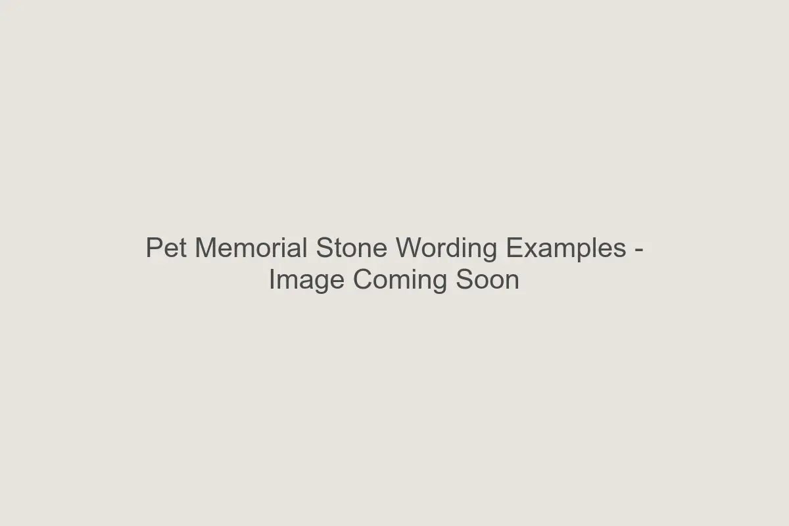
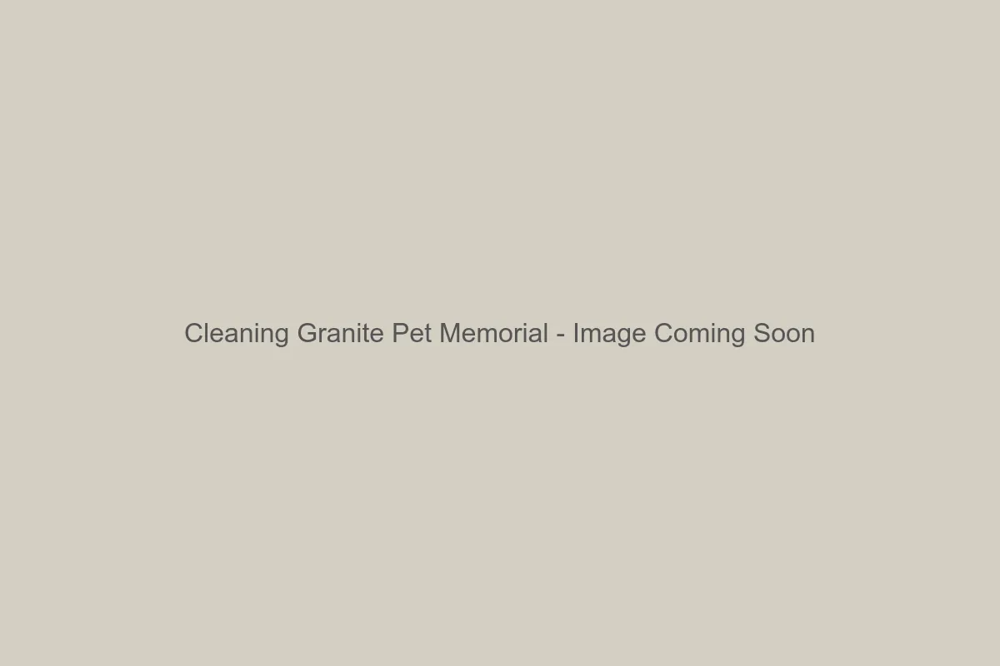

Pet Memorial Buying Guides
Expert guidance on choosing materials, engraving meaningful wording, and selecting the right size pet memorial stone for lasting outdoor remembrance.
Browse our library of expert guides to help you create the perfect tribute for your beloved companion. From material comparisons to installation tips, we’re here to help every step of the way.

Granite vs. Cast Stone: Which is Best?
Compare the durability, appearance, and longevity of natural granite versus cast stone. Learn which material is best suited for your climate and outdoor placement needs.
Read Guide
Choosing the Right Size Stone
A visual guide to selecting the perfect size memorial for your garden, lawn, or dedicated pet cemetery space.
View Size Guide
What to Write on a Memorial
Inspiration for epitaphs, quotes, and meaningful wording to honor your beloved dog, cat, or companion animal.
Get Wording IdeasMemorials for Every Pet Type
From dogs and cats to horses and birds, discover thoughtful memorial ideas tailored to honor every kind of animal companion.
Explore Options
How to Install Your Stone
Step-by-step instructions for placing your memorial stone securely in your garden or lawn for stability and longevity.
View Instructions
Care & Maintenance Guide
Simple cleaning and care tips to keep your granite or cast stone memorial looking beautiful year after year.
Reads Care Tips